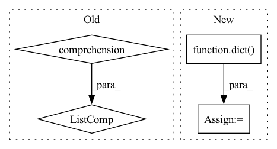

Pattern ID :7748
Before Change
output = self.data_loader.dataset.evaluate(
blob, logger=self.logger, **eval_cfg)
self.logger.info(", ".join(
["{}: {}".format(k, v) for k, v in output.items()] ))
return output
After Change
output = self.data_loader.dataset.evaluate(
blob, logger=self.logger)
else:
output = dict()
synchronize()
return output
In pattern: SUPERPATTERN
Frequency: 5
Non-data size: 4
Instances Fragment ID: 27581348
Project Name: yeliudev/nncore
Commit Name: a1ce5939998789d4d027207aa223a8c1bb088681
Time: 2021-03-23
Author: yeliudev@outlook.com
File Name: nncore/engine/engine.py
M Class Name: Engine
N Class Name: Engine
M Method Name: evaluate(1)
N Method Name: evaluate(3)
M Parent Class: object
N Parent Class: object
M File Name: nncore/engine/engine.py
N File Name: nncore/engine/engine.py
M Start Line: 354
M End Line: 365
N Start Line: 357
N End Line: 368
Before Change
pred = self.model(X)
[fn(pred, y) for fn in self.metric_fns]
result = {type(fn).__name__: fn.compute().item() for fn in self.metric_fns}
[fn.reset() for fn in self.metric_fns]
return result
After Change
def test_epoch(self, test_iterable_ds):
num_batches = 0
sklearn_intermediates = dict()
results = dict()
with torch.no_grad():
for _, (X, y) in enumerate(test_iterable_ds):
X = X.to(self.device)
y = y.to(self.device) Fragment ID: 27581349
Project Name: ryantd/veloce
Commit Name: aca7bbb15fbcbae885dd418e7ff969ad4828703e
Time: 2022-01-04
Author: xiaoyu.zhai@hotmail.com
File Name: phetware/epochvisor.py
M Class Name: Epochvisor
N Class Name: Epochvisor
M Method Name: test_epoch(2)
N Method Name: test_epoch(2)
M Parent Class: object
N Parent Class: object
M File Name: phetware/epochvisor.py
N File Name: phetware/epochvisor.py
M Start Line: 126
M End Line: 133
N Start Line: 128
N End Line: 154
Before Change
with flow:
resp = flow.post(
endpoint,
[Document() for _ in range(10)] ,
return_results=True,
port_expose=port_expose,
)After Change
with portforward.forward(
namespace, gateway_pod_name, flow.port_expose, flow.port_expose, config_path
):
client_kwargs = dict(
host="localhost",
port=flow.port_expose,
asyncio=True,
)
client_kwargs.update(flow._common_kwargs)
client = Client(**client_kwargs)
client.show_progress = True Fragment ID: 27581340
Project Name: jina-ai/jina
Commit Name: 6e9e7ef32f61cab04c6efc7a9f21659d26b50fdb
Time: 2022-01-10
Author: joan.martinez@jina.ai
File Name: tests/k8s/test_k8s.py
M Class Name: AnonimousClass
N Class Name: AnonimousClass
M Method Name: run_test(4)
N Method Name: run_test(3)
M Parent Class:
N Parent Class:
M File Name: tests/k8s/test_k8s.py
N File Name: tests/k8s/test_k8s.py
M Start Line: 10
M End Line: 18
N Start Line: 78
N End Line: 110
Before Change
optimizer.step()
self.update_metrics(out, y)
results = [loss.cpu().detach()] + [metric.result() for metric in self.metrics]
return dict(zip(self.metrics_names, results))
After Change
loss.backward()
optimizer.step()
out = dict(z_masked=out)
metrics = self.compute_metrics(out, y)
results = [loss.cpu().detach()] + metrics
Fragment ID: 27581342
Project Name: edisonleeeee/graphgallery
Commit Name: eaac3046b667b489b961d9a4eb72d82e1ff4ad32
Time: 2021-10-03
Author: cnljt@outlook.com
File Name: graphgallery/nn/models/pytorch/sat/base_sat.py
M Class Name: BaseSAT
N Class Name: BaseSAT
M Method Name: train_step_on_batch(5)
N Method Name: train_step_on_batch(5)
M Parent Class: TorchEngine
N Parent Class: TorchEngine
M File Name: graphgallery/nn/models/pytorch/sat/base_sat.py
N File Name: graphgallery/nn/models/pytorch/sat/base_sat.py
M Start Line: 21
M End Line: 47
N Start Line: 45
N End Line: 48
Before Change
if record_states:
for state_name in state_names:
record_dict[state_name] = torch.stack(
[item[state_name].detach() for item in recordings] , 1
)
return torch.stack(output_spikes, 1), state, record_dict
After Change
if record_states:
record_dict = {name: torch.stack(vals, 1) for name, vals in recordings.items()}
else:
record_dict = dict()
return torch.stack(output_spikes, 1), state, record_dict
Fragment ID: 27581354
Project Name: synsense/sinabs
Commit Name: 3cf7eff84e6558ff777fe67274ce386aa09bb516
Time: 2022-06-10
Author: felix.bauer@aictx.ai
File Name: sinabs/layers/functional/lif.py
M Class Name: AnonimousClass
N Class Name: AnonimousClass
M Method Name: lif_forward(11)
N Method Name: lif_forward(11)
M Parent Class:
N Parent Class:
M File Name: sinabs/layers/functional/lif.py
N File Name: sinabs/layers/functional/lif.py
M Start Line: 59
M End Line: 86
N Start Line: 59
N End Line: 86